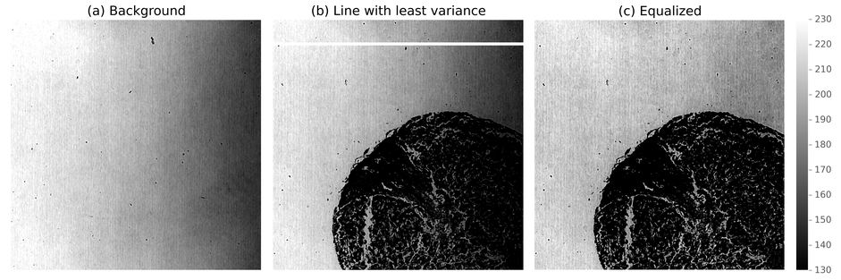
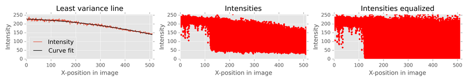
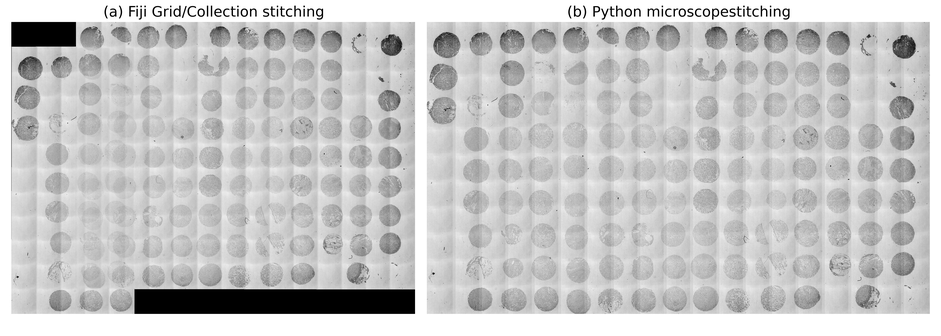
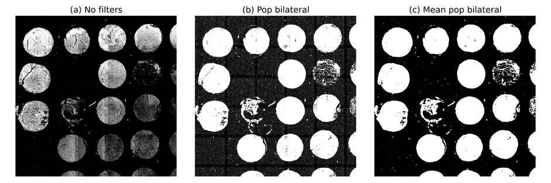
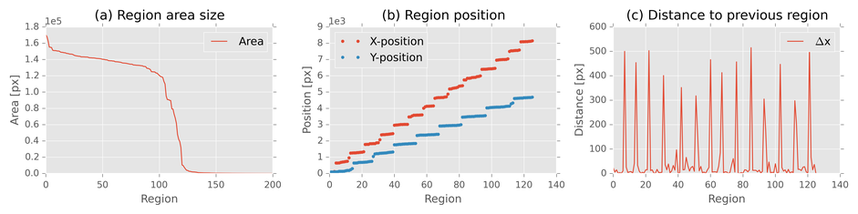
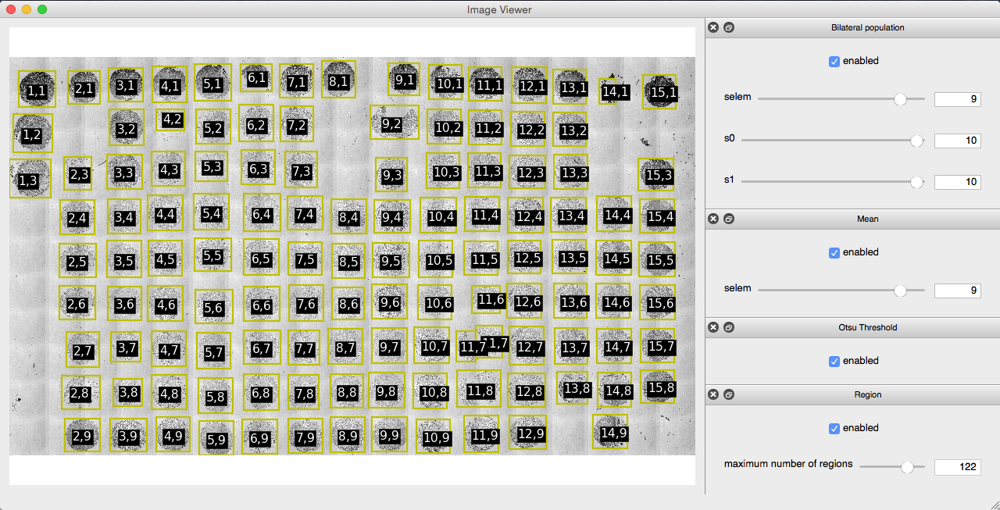
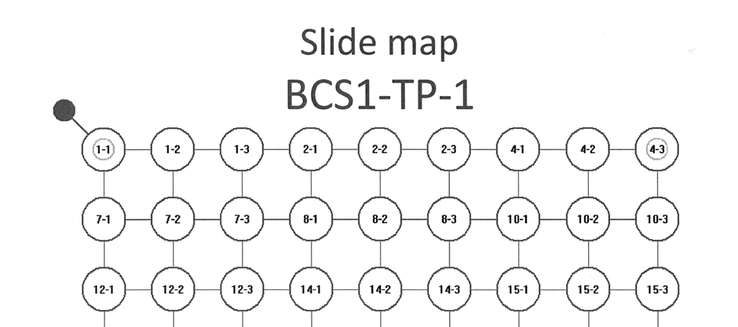

What to communicate: goal, overview of experiences made, results
This thesis documents work on automatic microscope imaging of breast tumor tissue micro arrays and how the images can be analyzed for a supplement in cancer diagnosis. The overall research goal has been to classify tumor grade (I, II or III) based on the fiber structure in the tissue samples. Supervised machine learning is the method of analysis, where St. Olavs hospital has supplied a dataset of tissue samples at the tumor peripheral from 924 (TODO update excact number) patients.
Automated microscope scanning is in principle straight forward, but the implementation will be dependent on many aspects of the experimental setup. In general, some of the aspects discussed in this thesis are:
The general aspects listed above are not unique to the experiments and experimental setup, and could potentially be useful for others. But this thesis will also address issues directly associated to tissue micro arrays and the Leica SP8 microscope:
Results on the dataset was positive/negative. Details on the result.
A proposal for further research with the same dataset is extracting more features from the images and use equivalent methods to find relationships to the clinic data. IF POSITIVE RESULT: Collecting tissue sample is a part of the standard procedure in breast cancer diagnosis at St. Olavs hospital, and one can do the analysis described in this thesis to further confirm or falsify the result.
What to communicate: motivation, brief summary of chapters
With a population just above 5 million 1, three thousand women are diagnosed with breast cancer each year 2 in Norway. This makes breast cancer the most common kind of cancer, affecting one of every eleventh woman. Luckily the cancer form is often treatable, and in 2012 there was 649 fatalities caused by breast cancer 3. The diagnosis is an act of several steps, and currently contains the following at St. Olavs hospital:
In particular, pathologists suggest that aggressiveness of a tumor is related to how fiber is aligned at the tumor peripheral. In example straight aligned fibers can be a sign that tumor cells have modified the stroma to promote spreading of cells. The alignment of fibers is a feature which can be extracted by image processing. Since several techniques to extract features is imaginable, supervised machine learning is practical for finding novel approaches.
From report - may use some of this: Over three million published articles on pubmed with keyword cancer shows the huge research effort for understanding, diagnosing and treating cancer diseases. The research focus is mainly on tumor cells, but a segment of interest which is increasing is research on tumor stroma as seen in figure 1.1.
Figure 1.1: Amount of published articles by year on different search terms. The search term tumor cells outnumber the others by two orders of magnitude. Note the logarithmic scale on y-axis.
Tumor stroma is the environment of cells, and it can be suppressing or supporting the function of the tumor cells. It is suggested that in the development of a tumor, the stroma is changing from being suppressive to supportive of the tumor cells [TODO REF].
In particular, collagen fiber is known to be altered in the surroundings of tumor cells under the development towards metastasis. One bio-marker for collagen fibers, is their alignment at the vincinity of the tumor, which may predict if a tumor is malignant. The fiber alignment can be used as a diagnosis tool for malignant tumor, and an article written at NTNU have studied collagen fiber alignment in a manual qualitative manner.
St. Olav hospital have breast tissue samples from 900 pasients along with clinical data. In total three samples per pasient, one sample inside, one sample at the boundary and one sample outside the tumor. The samples is laid in a matrix on a glass slide, each glass slide having about 130 samples. As microscope scanning and analysis of such a large data set is not straightforward, this project have explored possibilities for automating the process.
To be specific, this thesis will describe method and results for - parameters for obtaining quality SHG images - effective way to scan whole glass slides of 126 samples - machine learning and correlation to clinical data
ML: En hoveddel i arbeidet har vært automatiseringen av TMA. Skrive noe om TMA og hvorfor automatisert analyse er nødvendig...skal lede opp til en beskrivelse av de tekniske utfordringene som er løst.
What to communicate: theory and details that are not obvious for understanding the rest of the text
ML: I denne delen bør man primært ha med teori som er nødvendig for å forstå det som kommer i metodedelen. Altså ikke skriv for mye her før strukturen og innholdet er mer klart.)
ORB and Ransac 1: https://peerj.com/articles/453/#p-1 ## Scanning microscope - Epi setup - scanning, descanned detectors
focal volume ## Nonlinear light interaction
What to communicate: experimental setup to reproduce results, description of automatic process, limitations/obstacles specific to experimental setup, brief description of software modules in use
The images has been taken with a Leica SP8 microscope using LAS X software version 1.1.0.12420 from Leica Microsystems CMS GmbH. Two lasers was in use, a pulsing Coherent laser and a continious LASOS argon laser. Full specifications of lasers are in table .
| Brand | Model | Specifications |
|---|---|---|
Coherent |
Chameleon Vision-S |
Modelocked Ti:Sapphire, wavelengths 690-1050 nm, 2500 mW, 80 MHz pulsing, ≈ 75 ps pulse width |
LASOS |
LGK 7872 ML05 |
Argon Continious wave, wavelengths 458, 476, 488, 496 and 514 nm, 65mW |
The SP8 microscope has an inverted epi-setup, with four descanned detectors and four non descanned detectors. The descanned detectors use a prism along with adjustable mirrors so that specific wavelengths can be picked out in the signal, ranging from TODO. The descanned detectors was used with band pass filters of 525/50 nm and 445/20 nm. Two of the descanned detectors are behind the objective and two on opposite side of the objective behind a collector, which makes it possible to measure both backward and forward light.
Communicate: the procedure of automatic scanning
The automated scanning aims to lift the burden of manually labor and prevent errors in the imaging process by finding regions with the samples in an overview image. The process consists roughly of the steps:
Overview images was taken with a 10x air objective, equalized and stitched. The equalization step corrects uneven illumination and increases contrast for viewing purposes. To improve robustness of segmentation, a local bilateral population filter was applied to the stitched image before it is thresholded. Each separate region in the segmentation are sorted by their area size, small regions are excluded and the user can exclude or add regions if some of the samples are not detected. Row and column position of the regions are calculated by sorting them by their position in the image. A more detailed description follows.
Overview images was taken with an technique similar to bright-field microscopy except that the light source is a scanning laser. The laser in use was the argon laser in table with 514 nm emission line, output power set to 2.48% and intensity to 0.10. Forward light was imaged using a 0.55 NA air collector with the non descanned detector having the 525/50 nm bandpass filter. Aperture and detector gain was adjusted so that the histogram of intensities was in the center of the total range without getting peaks at minimum and maximum values.
Zoom 0.75 and 512x512 pixels was chosen, which gives images of ≈ 1500 μm (read more about resolution and image size in the discussion). After images is scanned, they are rotated 270 degrees, as Leica LAS store .tif-images with axes swapped in regards to the stage axes.
 {#fig:illumination}
The uneven illumination in the experimental setup is illustrated in figure (a). By assuming the intensity variation in all pixels are following the slope of the background, equalization was done by dividing each row in the image by the normalized intensity profile of the background.
equalized = img.astype(np.float) # assure datatype have real division ability
equalized -= images_minimum # normalize
equalized /= images_maximum - images_minimum
equalized /= intensity_profile # equalize
equalized[equalized > 1] = 1 # clip valuesAs seen in code listing the image is first normalized. images_minimum and images_maximum is found by selecting the median of respectively minimum and maximum intensity of all images. By taking the median of all images one avoids outliers and gets the same normalization for all images. Similar technique could be used for normalizing the images after equalization, but clipping gave acceptable results. intensity_profile is a curve fit for one of the background rows. The background row was found by selecting the row with least variance (given that the image does have a row with background only). In figure (b) the row with least variance is indicated with a white line. The same intensity profile is used on all images, and it's fitted to a second degree polynomial to steer clear from noise as illustrated in (a).
The effect on pixel values can be seen in figure _intensities (b) and (c), where each dot represents a pixel value with increasing image x-position on the x-axis.
 {#fig:illumination_intensities}
 {#fig:stitching}
Due to little signal in areas between samples, automatic stitching with correlation methods are prone to fail. To remedy this, the same overlap was chosen when stitching the overview image. Using the same overlap in this context gives reliable stitching with negligible errors. The overlap is chosen by calculating all overlaps with phase correlation and taking the median. The stitching was put in a python package and can be used as shown in code listing .
from microscopestitching import stitch
from glob import glob
files = glob('path/to/images/*')
images = []
for i, file in enumerate(files):
# rectangle of 4 rows and len(files)//4 columns
row = i % 4
column = i // 4
images.append((file, row, column))
stitched_image = stitch(images) {#fig:segmentation}
As seen in figure (b), the samples at the edge are darker than the samples in the center. To improve this intensity variation, the overview image is filtered with a local bilateral population filter. The filter counts number of neighbour pixels that are outside a specified range. The effect of the filter is less computational demanding and somewhat similar to an entropy filter. Areas with low signal variation (the background) give low values and areas with high signal variation (the samples) give high values. To reduce noise after the bilateral population filter, a mean filter was applied. The size of structure elements was 9x9 pixels for both filters. Figure (a), (b) and (c) show how the segmentation is affected by the filters. Code for reproducing the steps are in code listing .
from skimage.morphology import square
from skimage.filters import threshold_otsu
from leicaautomator.filters import mean, pop_bilateral
selem = square(9)
filtered = pop_bilateral(image, selem)
filtered = mean(filtered, selem)
threshold = threshold_otsu(filtered)
segmented = filtered >= threshold # high values indicate signalAfter segmentation, regions was sorted by their area size and only the largest regions are kept. Row and column was calculated by sorting regions by position, measuring the distance between them and increment row or column number when there is a peak in the distance to previous region. The code can be seen in code listing and figure illustrate typical area size (a), position (b) and position derivative (c).
 {#fig:regions}
from skimage.measure import label, regionprops
labels = label(segmented, background=0) # background=0: exclude background
regions = regionprops(labels) # measure region properties
regions.sort(key=lambda r: -r.area) # sort by area size, largest first
max_regions = 126
if len(regions) > max_regions:
regions = regions[:max_regions] # only keep max_regions
for r in regions:
r.y, r.x, r.y_end, r.x_end = r.bbox # for convenience
for direction in 'yx': # same algorithm for row and columns
regions.sort(key=lambda r: getattr(r, direction))
previous = regions[0]
for region in regions: # calc distance to previous region
dx = getattr(region, direction) - getattr(previous, direction)
setattr(region, 'd' + direction, dx)
previous = regionThe whole process of segmentation was done interactive as part of the python package leicaautomator, where settings can be adjusted to improve segmentation and regions can be moved, deleted or added with mouse clicks. The interface is shown in figure .
 {#fig:leicaautomator}
After regions was localized, pixel-size in meters was calculated by
$$ x_{resolution} = \frac{\Delta x}{\Delta X}. $$
{#eq:resolution}
Here Δx is displacement in pixels and ΔX is stage displacement in meters read from the overview scanning template in the experiment AdditionalData/{ScanningTemplate}overview.xml at XPath ./ScanningTemplate/Properties/ScanFieldStageDistanceX. Left most left pixel was calculated by
$$ X_{start} = X_{center} - \frac{S_x \cdot x_{resolution}}{2}. $$
{#eq:firstx}
In equation Xcenter and Sx is respectively the stage position and number of pixels in the top left image of the overview scan. Xcenter was read from the overview scanning template at XPath ./ScanFieldArray/ScanFieldData[@WellX="1"][@WellY="1"][@FieldX="1"][@FieldY="1"]/FieldXCoordinate. The stage x-coordinate for any pixel was then calculated by
X = Xstart + x ⋅ xresolution.
{#eq:pos}
To be able to scan regions of different shape and size, a bounding box for the region was used to calculate the scanning area. Moving the stage to the boundary position will center the boundary in the image, and therefor start position of first image is calculated by
$$ X_{start} = X + \frac{\Delta X_{job}}{2}. $$
{#eq:xstart}
Here, ΔXjob is stage displacement between images in the job scanning template. Xstart will have an error of
$$ \epsilon = \frac{1}{2} (\Delta X_{job} - \Delta X_{img}), $$
{#eq:xerror}
where ΔXimg is the total size of the scanned image. This was considered neglectible as ΔXjob ≈ ΔXimg and number of columns scanned was calculated by
$$ f_x = \lceil \frac{\Delta X}{\Delta X_{field}} \rceil. $$
{#eq:enabledfields}
To avoid unnecessary long stage movements between rows or columns, regions was looped through in a zick-zack pattern, given by their row and column position. For each region the scanning template was edited, the template was loaded and the scan was started through CAM. Single templates was used due to a Leica LAS software limitation; scanning templates with irregular spaced wells can not be loaded. Code listing illustrates the process.
from leicascanningtemplate import ScanningTemplate
from leicaautomator import zick_zack_sort
from leicacam import CAM
cam = CAM() # instantiate connection to microscope
# regions sorted as [r(1,1), r(1,2), r(2,2), r(2,1), r(3,1), r(3,2), ...]
# here r(2,1) is region(col=2, row=1)
regions = zick_zack_sort(regions, ('well_x', 'well_y'))
tmpl_path = r"C:\Users\TCS-User\AppData\Roaming\Leica Microsystems\LAS X" + \
r"\MatrixScreener\ScanningTemplates" + "\\"
tmpl_name = tmpl_path + '{ScanningTemplate}leicaautomator'
for n, region in enumerate(regions):
# alternate between tmpl_name0/1.xml, due to a
# bug LAS cannot load the same name twice
tmpl = ScanningTemplate(tmpl_name + str(n%2) + '.xml')
tmpl.move_well(1, 1, region.real_x, region.real_y)
tmpl.write()
cam.load_template(tmpl.filename)
# do an autofocus
cam.autofocus_scan()
cam.wait_for('inf', 'scanfinished')
# run the scan job
cam.start_scan()
# record output filename
region.experiment_name = cam.wait_for('relpath')['relpath']
# continue with next region when scan is done
cam.wait_for('inf', 'scanfinished')SHG images was taken with a 25x/0.95 NA water objective. The pulsed infrared laser was set to 890 nm, intensity 20%, gain 40%, offset 80% and electro-optic modulator (EOM) on. Forward light was measured with non descanned PMT sensor behind a 0.9 NA air collector. Band pass filter in front of the detector was 445/20 nm and gain of detector was adjusted so that signal spanned the whole intensity range. Aperture was set to 24 (maximum).
A resolution of 1024x1024 pixels with 8 bit image depth was used. Frequency of scanning mirror was set to 600 lines/second.
TODO
 {#fig:slidemap}
Slide maps, seen in figure , and patient database was given by St. Olavs. As the slide maps contained circles, slide maps were filtered to remove all but text before it was read with OCR. The OCR text output was checked for errors programatically (id should be of correct format, id should increment, patients should be registered with correct slide in database column TP_nr, each patient should have three samples). OCR errors was fixed manually and other errors was recorded (see section Slide map errors in the appendix).
Every pasient id from the slide map was then saved to a stata database along with its slide number, row and column. Code listing show how the clinical data was correlated with samples.
import pandas as pd
# read databases
locations = pd.read_stata('data/ids/locations.dta')
clinical_data = pd.read_stata('data/clinic_data.dta')
# position query
condition = (locations.TP_nr == 1) & \
(locations.TP_rad == 3) & \
(locations.TP_kolonne == 5)
# get patient id
patient_id = locations[condition]['ID_deltaker']
# check exactly 1 patient registered at given row/col
assert len(patient_id) == 1
# clinical data query
condition = clinical_data.ID_deltaker == patient_id.iloc[0]
# get outcome
outcome = clinical_data[condition]['GRAD']The microscope software in use was Leica LAS X version TODO.
Utilities (not specific thesis): - fijibin: automate fiji/imagej from python - ipynbcompress: compress images in ipython notebooks
ML: Kan også skrive om spesifikke aspekter ved mikroskopsystemet som har muliggjort/begrenset/forhindret løsningene. All programvare som er utviklet bør omtales her, eventuelt med mer detaljer i et appendiks)
What to communicate: achievements and show-stopper/hard limitations
Comparison of thresholding
ML: Resultat så langt: Kontroll via Python, segmentering, z-correction
What to communicate: discuss results, limitations, possibilities for improvement
ML: Hvilke valg har blitt tatt, hva er viktig for neste bruker, hva er begrensninger, utviklingsmuligheter, pros/cons, hvor bra fungerer det....)
What to communicate: brief summary of the result and discussion, advice for further work
ML: Automatic imaging and segmentation of TMA has been demonstrated)...and....
Leica LAS design: - user should be mainly in LAS - automating on the side as a supplement - load before CAM can be used - does not load all settings from XML
TP2, row 3, col 6 - pasient id missing in db: 66
TP6, row 1, col 9 - pasient id missing in db: 222
TP3, row 1, col 3 - id 68, wrong TP_nr in db: 3.0 != 2.0
TP6, row 1, col 3 - id 209, wrong TP_nr in db: 6.0 != 4.0
TP6, row 1, col 6 - id 221, wrong TP_nr in db: 6.0 != 5.0
TP22, row 2, col 6 - id 130, wrong TP_nr in db: 22.0 != 3.0
TP22, row 2, col 9 - id 244, wrong TP_nr in db: 22.0 != 5.0
TP22, row 3, col 3 - id 281, wrong TP_nr in db: 22.0 != 6.0
TP22, row 3, col 6 - id 296, wrong TP_nr in db: 22.0 != 6.0
TP22, row 3, col 9 - id 309, wrong TP_nr in db: 22.0 != 6.0
TP22, row 4, col 3 - id 318, wrong TP_nr in db: 22.0 != 6.0
TP22, row 4, col 6 - id 376, wrong TP_nr in db: 22.0 != 7.0
TP22, row 4, col 9 - id 396, wrong TP_nr in db: 22.0 != 8.0
TP22, row 5, col 3 - id 413, wrong TP_nr in db: 22.0 != 8.0
TP22, row 5, col 6 - id 449, wrong TP_nr in db: 22.0 != 9.0
TP22, row 5, col 9 - id 453, wrong TP_nr in db: 22.0 != 9.0
TP22, row 6, col 3 - id 487, wrong TP_nr in db: 22.0 != 10.0
TP22, row 6, col 6 - id 493, wrong TP_nr in db: 22.0 != 10.0
TP22, row 6, col 9 - id 525, wrong TP_nr in db: 22.0 != 10.0
TP22, row 7, col 3 - id 728, wrong TP_nr in db: 22.0 != 15.0
TP3, row 9, col 6 - TP_nr not registered in db for ID_deltaker 140
TP5, row 9, col 9 - TP_nr not registered in db for ID_deltaker 251
TP9, row 10, col 9 - there should be 3 samples: ['467a-1']
TP9, row 11, col 3 - there should be 3 samples: ['467b-1', '467b-2']
TP9, row 12, col 6 - there should be 3 samples: ['471a-1', '471a-2']
TP9, row 12, col 9 - there should be 3 samples: ['471b-1']
TP10, row 8, col 6 - there should be 3 samples: ['507-1', '507-2']
TP10, row 12, col 6 - there should be 3 samples: ['525-2', '525-3']
TP11, row 11, col 6 - there should be 3 samples: ['566-1', '566-2']
TP3, row 1, col 3 - pasient id did not increment: ['68-1', '68-2', '68-3']
< ['102b-1', '102b-2', '102b-3']
TP4, row 1, col 3 - pasient id did not increment: ['162a-1', '162a-2', '162a-3']
< ['163-1', '163-2', '163-3']
TP6, row 1, col 3 - pasient id did not increment: ['209-1', '209-2', '209-3']
< ['268-1', '268-2', '268-3']
TP11, row 6, col 3 - pasient id did not increment: ['549-1', '549-2', '549-3']
< ['552-1', '552-2', '552-3']
TP22, row 2, col 6 - pasient id did not increment: ['130-1', '130-2', '130-3']
< ['3067-1', '3067-2', '3067-3']